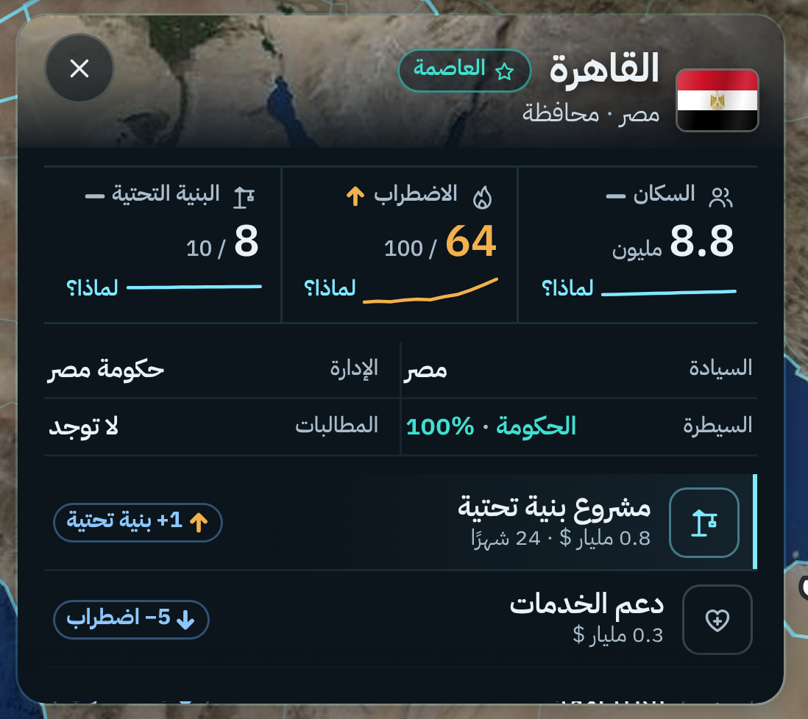
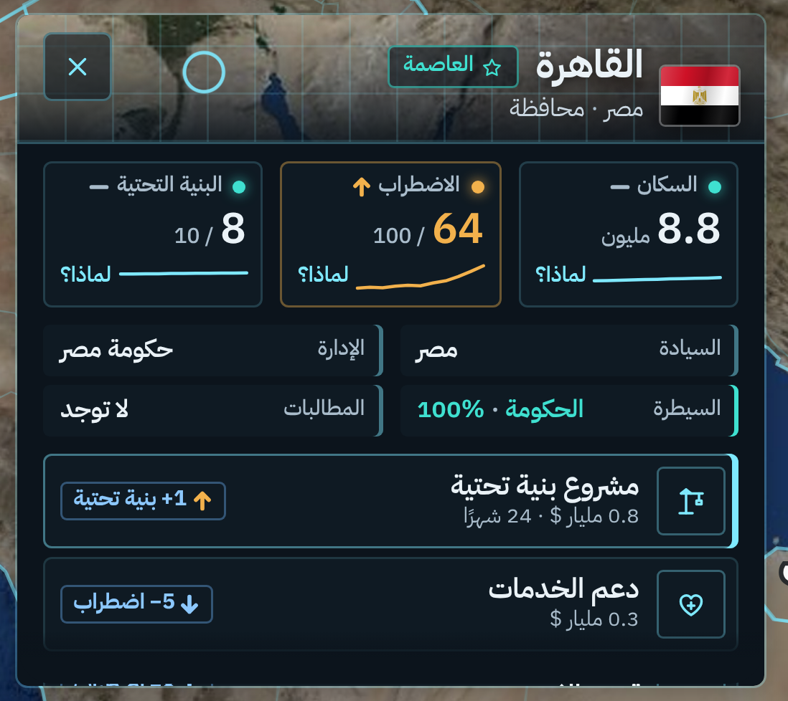

لوحة المحافظة: ستايل واقعي
بدون ألوان كرتونية · على آيفون 17 برو ماكس · اللون يجي بس للتحذير والأوامر
و1. لوحة قيادة احترافيةصورة فضائية حقيقية للمحافظة، أيقونات بخط رفيع، خطوط فاصلة، وخط تغيّر آخر 12 شهر تحت كل رقم
و2. غرفة عمليات حقيقيةنفس الفكرة بطابع عسكري واقعي: شبكة دقيقة ودائرة على موقع القاهرة، خانات بإطار، وأضواء حالة
على الشاشة كاملة